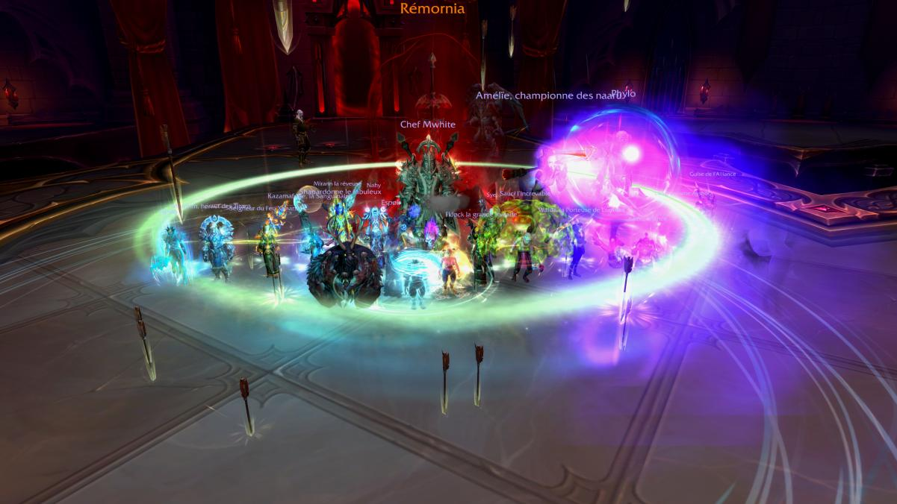
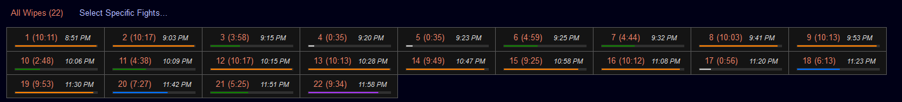
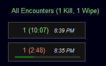

Château de Nathria Mythique :
l'interview de Kazuäl

Encore un gros GG pour le down final de Denathrius ! Quels étaient vos objectifs lors de la préparation du progress ?
Merci ! Notre objectif était le Cutting Edge minimum + meilleur performance possible en terme de temps de progress / nombres de pulls pour une guilde 2 soirs (l'idée à moitié cachée/inavouée de début d'extension était qu'on pouvait toucher un hall of fame sur l'extension si on se développait bien)
Comment avez-vous préparé votre progress ?
En terme de roster, on partait sur l'idée d'une concurrence saine pour pousser les joueurs à se surpasser les uns les autres, l'idée étant d'aligner la line-up la plus adaptée avec les meilleurs joueurs possibles sur chaque boss.
En terme de joueurs, on compte sur chaque membres de notre roster pour apprendre ce qu'ils ont à apprendre par rapport à leur classe sur tel ou tel combat, et à revenir vers nous si leur classe avait un impact particulier sur un aspect du fight auquel on aurait pas pensé, on surveille les performances "de loin" sauf si on remarque quelque chose de weird / vraiment sous performance et dans ces cas là, on en parle au(x) joueur(s) concerné(s).
En terme de strat, initialement, on était dans l'idée de link des guides vidéos pour donner l'idée générale de l'exécution du combat puis préciser devant le boss ce qu'on allait faire exactement en linkant une note ERT pour les détails spécifiques.
Ca a évolué pour la strat, à la demande de nos joueurs, dorénavant on un chan dédié strat "exécution icefall" sur lequel on explique avant d'arriver sur un boss ce qu'on lui fera avec des détails de postionnement, points spécifiques du combat, actions spécifiques des joueurs, ...
Quel est ton ressenti général sur Nathria MM ? 1ere moitiée, 2nd moitiée et dernier boss.
Overall un tiers ok en terme d'expérience de raid, des boss variés aussi, un peu dommage que le spirit shell du prêtre discipline ait été si prédominant parce que vu la physionomie des combats d'autres classes de healers auraient pu s'exprimer très facilement en progress (druide heal, maybe even holy priest, rsham, ...)
1ere moitié : Intéressante et évolutive en terme de difficulté. Shriekwing très facile à prendre en main mais punitif, into Altimore à peine plus compliqué mais un peu moins friendly en terme de numbers output avec le gear auquel tu l'abordais en progress (progress à 5 heals pour certaines guildes pour compenser ça). Puis le Destroyer qui apportait un niveau supplémentaire de difficulté en terme de cohésion de groupe / coordination des cds que les 2 premiers n'avaient pas + nécessite d'un disci priest minimum et de le jouer à 5 heals.
De là tu passes à X'ymox, ok ish en progress mais très demandant en terme de constance / exécution des mécaniques / timers de push entre les phases et pas très agréable à jouer comme fight (de loin le "pire" boss de la 1ere partie à mon sens, déjà on a mal joué dessus 1 soirée entière et perdu genre 40 pulls overall sur ça + des erreurs individuelles de porteurs de graines etc, mais en plus l'obligation de le transitionner d'une phase à l'autre a des moments bien précis sous peine de niquer sa spellqueue c'est une horreur, on a repassé 15 pulls dessus hier quasi à cause de ça, pas possible de le cheese).
Sun King boss naze en terme de strat mais avec des prérequis très important en terme de HPS / DPS output à des moments très précis, 5 healers (6 pour certaines guildes...) et minimum un holy priest requis. Sur la globalité,le fight est intéressant en tant que healer vu que heavy healing oriented mais difficile en tant que Dps pour burn les shield du boss en 2eme phase avant qu'ils n'explosent, progress ok de notre part dessus même si pas toujours la même compo donc un peu de temps perdu pour réassigner qui cd sur quelle cloak etc
2eme moitié : Ensuite Dark Vein. Difficulté inexistante ou presque, la prise en main des formes d'orbes et ensuite c'était juste du blast à 3 heals sans activer les réservoirs, tu pouvais terminer le boss avant que le premier reach 100% si tu avais assez de dps.
Council premier vrai wall du raid (sauf si on pseudo compte X'ymox pour l’exécution de la strat mais pas du tout dans la même mesure tho). Fight intéressant en 3 phases avec beaucoup d'interactions entre les boss/l'ordre dans lequel tu les tuait par rapport à la physionomie du combat. Fight très demandant tho parcequ'entre 9 et 10min quand exécuté proprement du début à la fin avec une dernière phase très brutale pour les tanks et très demandante en terme de burn dps + position du raid.
J'ai bien aimé le combat tho, worthy d'être un wall en mythique et fun malgré tout.
Sludgefist pseudo wall en terme de chiffres demandés à des moments très précis, on est arrivé dessus avec 220ish ilvl donc pas vraiment de difficulté à ce niveau la, un des perks de raid 2x/sem maybe, j'ai bienaimé, on a eu un progress plutot ok dessus donc ça a bien aidé mon ressenti ofc.
Un peu répétitif mais trèsstraightforward et une "bouffée d'oxygène" à progress après Council dans le sens ou un wipe sur Sludgefistc'est 2-3 min de combat et un sur Council tu es très rapidement à 7-8min.
SLG (Les Généraux ndlr) est overall un fight intéressant sur papier avec beaucoup d'éléments différents à gérer ou à déclencher à des moments précis. Pour nous un fight boring vu le moment ou nous sommes arrivé dessus : le gear du roster (224 ish moyen) faisait qu'on devait constamment gérer / limiter / stopper notre DPS sous peine d'overlap différents effets déclenchés par les treshold "pourcentage de vie" des adds.
En gros une fois cette dificulté passée (ça a pris du temps... xD) c'était juste une question d'enchainer les try avec la compo la plus similaire possible d'une soirée à l'autre pour gagner les automatismes, on a pas eu énormément de pulls en dernière phase avant de le tuer par exemple, pas certain qu'on en ait eu ne fut-ce que 5, les big points d'attention c'était la gestion des adds pendant les 2 phases d'intermission, on a passé beaucoup de temps la dessus (proportionnellement au reste).
On le tue à 185 pulls, juste post un nerf qui facilite bien la vie (puissance des effets des adds, durées des shields avant explosion, ...), pas une mauvaise perf du tout en temps de combat/nombre de pulls
Mais de part la frustration de ces stop/chill dps tout au long du fight pas un sentiment très fun après le kill, juste le devoir accompli on va dire x).
Précisément en tant que heal pas vraiment de difficulté, pas de gros hps requis, juste du HPS intense par moment, réglé "facilement" par une bonne gestion des CDs.
Denathrius est mécaniquement sur papier le fight que j'ai préféré du tiers et que je trouve le plus cool, c'était aussi mon combat préféré en HM d'ailleurs. Après, dans la pratique, le fait de devoir enchainer 3min de phase 1 à chaque pull est rapidement devenu fatigant / ennuyant / cerveau mode off et mémoire musculaire en action, ce qui a rendu le fight boring. C'est un peu la critique que j'ai sur ce fight.
Plus globalement quand on est arrivé dessus la première phase qui auparavant pouvait être "touchy" dans la "gestion du nombre d'adds + dps boss pour l'amener à 70% au cast du 3eme ravage" n'était plus réellement une difficulté tant que tu avais un plan précis pour les soaks de Cleansing Pain (qui font donc spawn les adds) + un poil de prise en main du combat pour tlm.
Une fois dans la 2eme phase (70% à 40.5%) et dans la salle du sous-sol c'est la que ça devient plus intéressant, un split de groupe précis avec des dps check potentiellement tight (plus trop, mais still pénalisants si Cds dps mal employés) + une exécution très "scriptée" requise des tanks pour débuff les lieutenants puis les adds, overall très intéressant mais potentiellement bien frustrant aussi parce que rarement des erreurs individuelles ont été autant punitives sur ce tiers : les morts étaient rarement autre chose que des OS et donc utilisation de combat res à chaque fois, c'est en gros la phase dans laquelle on a passé le plus de temps en combat sur ce boss Une fois la mise en place de ce qui devait être mis en place (groupes, interrupts, cds, ...), ce qui s'est fait rapidement, c'était plus du fishing pour le pull "ok pour progress la dernière phase".
La 3eme phase que j'ai bien aimée perso. Le groupe est split en 2, focus healing un peu intensif par moment et tight dps check pour une guilde en progress qui prends encore ses habitudes sur quand dps et quand/comment se déplacer etc.
Mention d'honneur à l'addon X Practice qui nous a permis de répéter les déplacements pour les orbes, l'esquive du massacre, les bait du ravage etc., et qui nous a bien fait gagner du temps sur
2 points difficiles sur la phase qui sont le bait du ravage pour qu'il condamne la bonne partie de la salle + le massacre de Remornia qui se ballade partout en même temps et ensuite c'est uniquement de la gestion individuelle (de son dps, de ses CD def, de ses déplacements, position, ...).
Une fois que ça a été fait, quelques ajustements en terme de cd dps, delay Cds fin de phase 2 pour pouvoir en utiliser 2 en dernière phase vu qu'on avait plus vraiment besoin de ce dps pour transi le boss par exemple, et assez de pratique de pulls avec la même compo en dernière phase et le boss est mort.
Le raid pré-kill par exemple :
Le raid où on l'a kill : 
En comparant les deux on voit qu'on tue beaucoup plus rapidement que certains de nos pulls moins aboutis la soirée d'avant (beaucoup c'est relatif en fait, entre 5 et 10 sec plus rapidement).
Quel a été l'élément décisif sur les Generaux et Denathrius ?
Je dirais la possibilité d'aligner la même composition le plus souvent possible.
On a eu des absences à différents moments sur SLG ou Denath de tel ou tel membre pendant 1 semaine, ça nous a impacté de manière différente suivant les joueurs mais c'est grâce à certains de nos membres qui pouvaient swap de rôle très facilement qu'on a pu limiter l'impact sur notre progress sur ces deux boss (merci Mordrim d'avoir tanké SLG/Denath et à Ekzo d'avoir raidlead SLG, mon raidleading sur Denath pendant les absences de Sdan par exemple).
Malgré ça, on a quand même ressenti une grande différence forcément en terme d'automatismes pris quand on pouvait aligner les mêmes joueurs dans les mêmes rôles 3 ou 4 raids d'affilées avec des burts important de progress sur ces soirs la Pour SLG je ne vois rien de plus nécessairement, peut-être un peu plus de prise en main de certains membres mais globalement tout le monde est arrivé assez préparé.
Pour Denath je rajouterais justement les changements dans l'exécution des Cds Dps pour être certain de pouvoir output le maximum en dernière phase, ça plus une plus grande habitude niveau déplacements individuels et collectifs ça nous a aidé à résorber les 700k qu'il nous manquait régulièrement pour kill le boss.
(Personnellement je jouais avec le légendaire Earthquake sur le Earth Elemental et une opti orientée dps sur la dernière partie du progress par exemple).
Avez-vous eu besoin de jouer une composition méta ou vous avez quand même pu prendre des classes/spés off meta ?
Oui et non pour les compositions méta, il n'y avait pas vraiment de compo "20 personnes" nécessaires sur ce tiers mais par contre beaucoup de classes / spec pouvaient te faciliter la vie ou étaient requises sur différents combats et avaient un réel impact sur ton progress et ta capacité à tuer tel ou tel boss.
Dans le désordre et ce qui me vient en tête les Holy Priest sur Sun King, les DK (AMZ) et Moonkin (Starfall les adds en dernière phase) sur Council, les Mages ou classes à immune + grosse mobilité sur Xymox, le burst ST insane des Afflock les hunters pour leur burst cleave sur SLG (et ailleurs), le Disc Priest sur presque tous les combats, le Unholy DK pour son burst aoe/ST, les Monks dps pour le cleave insane pré-nerf (un peu moins post nerf, mais still ok), le Rsham (double Rsham même) sur Sludgefist et SLG pour les Ankh Totem en plus du strong heal, et tous les autres que j'oublie.
Un tiers malgré tout très Spirit Shell / AMZ like vu l'impact énorme de ces deux CDs.
La manière dont ça nous a impacté nous en particulier ? On avait commencé le tiers avec un Brewmaster + un BDK en terme de compo tank et on avait un DH Dps dans le roster, vu le big plus d'avoir des Unholy DK et la force du DH Tank, on a rapidement fait swap de spec/rôle ces deux là.
On avait aussi commencé le tiers avec pas mal de rogue, heureusement ça s'est lissé entre ceux qui ont arrêté le jeu et l'un d'entre eux qui est passé hunt main, le rogue n'apportait quasi rien sur ce tiers excepté du gros cleave en outlaw et du bon burst ST sur la fin pour la spé assa mais rien de comparable avec d'autres classes (on tue malgré tout Denath avec un assa et un outlaw ^^).
Sinon la nécessité d'avoir au moins un warlock sur certains fights parce que la gate était "obligatoire" pour mettre toutes les chances de son coté (ou simplement pour réussir une mécanique sans mourir sur SLG ou pouvoir faire le combat sur Denath par exemple).
Comment avez-vous convaincu des top FR comme Mordrim, Phylo et Amelie de vous rejoindre ?
Pour leur recrutement ça s'est fait de manière assez naturelle, ils étaient déjà venu en raid avec nous sur Nyalotha via Anoushka et étaient déjà intéressé par nous rejoindre à ce moment là sans que ça ne se fasse.
Sur ce tiers, leur guilde a fini par disband aux alentours de leur progress sur Council lorsque nous étions nous sur Sludge ou début SLG, je ne sais plus.
De notre coté on a eu pas mal de mouvements dans notre roster sur ce tiers (joueurs qui stop, joueurs qui ne conviennent pas / plus, apply pas concluantes, ...) et donc on pouvait se permettre de leur faire une place à ce moment là. Anoushka leur vantait Icefall quotidiennement. On a alors pris le temps de discuter avec eux et leur phase de test chez nous a rapidement été lancée.
Gros point positif pour nous de pouvoir recruter des joueurs qu'on connaissait, à qui on pouvait 100% faire confiance pour le niveau de jeu et qui peuvent endosser différent rôle/spec/classe suivant les besoins du roster, une occasion en or en gros.
Ils se sont très bien intégré dans notre roster et leur apply a été validée naturellement aussi
Ils sont (pour autant que je sache !) très content d'être chez nous, nous sommes très contents de les avoir ^^.
Comment améliorer votre classement tout en respectant les 2 soirs/semaines ? Est-ce possible ?
Oui c'est possible, déjà parce qu'on a beau avoir été plutot OK overall sur ce tiers pour une guilde 2 soirs/sem, on a aussi eu des boss sur lesquels nous avons été plutot mauvais en tant que groupe, X'ymox PTSD, ou d'autres sur lesquels on aurait pu mieux faire si d'autres facteurs ne nous avaient pas impactés (problème de lag serveurs, connexion internet, problèmes matériels, absences, ...).
C'est aussi possible parce que nous avons, en tant que guilde mais aussi nous en tant qu'officiers, appris beaucoup de chose sur la bonne manière de fonctionner pour Icefall. Nous avons déjà fait évoluer pour le mieux pas mal de points, il en reste d'autres non seulement en tant que groupe et en tant que guilde, mais aussi pour nos joueurs en tant qu'individus (préparation, gameplay, approche des combats, ...) Il ne faut pas oublier que c'est le premier tiers de vrai progress depuis la création d'Icefall, on a eu notre objectif principal le Cutting Edge d'accord, mais ça reste un work in progress a bien des niveaux et on peut donc toujours faire mieux évidemment :).
Quel est ton avis sur le chaman heal dans ce pallier ?
Très fort, omniprésent, indispensable MAIS pas autant qu'un Disc priest si on regarde tous les 10 boss.
Hormis Sludgefist et SLG où tu dois jouer dans l'idéal avec 2 Rsham (peut-être moins maintenant vu les nerfs et le gear, mais bref) sur tous les autres combats tu pourrais t'en sortir avec un druide heal ou un 2eme Hpal.
Après point de vue Rsham en particulier ce qui a énormément aidé a atteindre ce niveau d'importance et d’apport sur ce tiers, je pense que ça vient principalement de l’interaction entre l’habilité Nécrolord et le Légendaire Riptide qui a donné au resto shaman un outil pour soigner efficacement et régulièrement (45sec cd + random reset) des alliés sans restriction de proximité. Ce qui était une grosse faiblesse de la spec auparavant : elle était très forte en combat groupés (healing rain, SLT, ...) et perdait énormément sur tous les autres types de combats, ça a globalement été lissé sur ce tiers.
On verra pour le suivant si l'importance reste là même ou non mais le resto shaman restera probablement très fort en progress malgré tout juste pour le toolkit qu'il apporte à un raid (SLT et Ankh Totem pour ne citer qu'eux) même si il sort un peu moins d'HPS que d'autres spec. Imo le line-up heal idéal sur ce tiers ça aurait été Disc Priest / Rsham / 2x Hpal et un Rsham en 5eme healer/backup par exemple.
Une des faiblesses qu'il reste au Rsham (et a tous les autres healers d'ailleurs) par rapport à un Disci / Hpal à l'heure actuelle c'est que tu ne peux pas faire du DPS en faisant ta rotation heal, tu dois choisir à tous moment si tu dois/si tu veux cast un soin ou cast un sort de dégats par exemple. Alors bien sur ça donne un peu plus de relief et de "skillcap" en quelque sorte, mais en progress ça peut se ressentir aussi.
Comment arrives-tu à 8k de heal sans faire de heal ?
Maintenant que vous l'avez clean, vous pouvez sûrement le faire à 19 et me prendre, n'est-ce pas ?
Comment Sdan arrive à jouer et à leader une stratégie aussi complexe ? Est-il seulement humain ?
Pensez-vous que le roster va rester globalement le même pour le prochain pallier ?
Allez-vous revoir vos objectifs à la baisse pour le prochain pallier ?
Un dernier mot à vos fans qui vous soutiennent ?